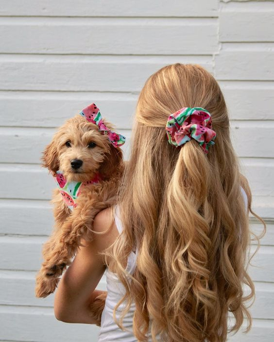
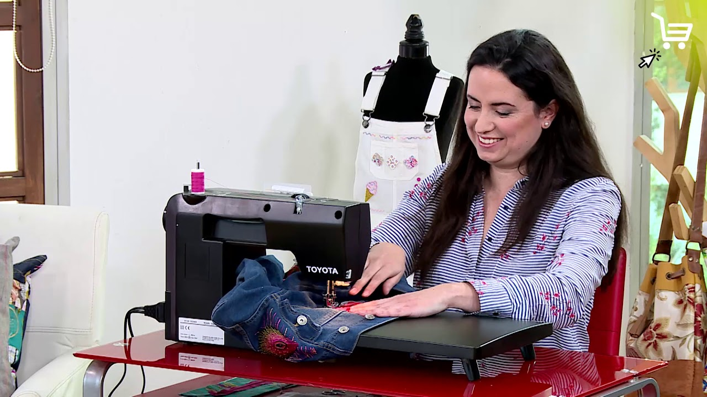

Estamos felices de tenerte de nuevo con nosotros, así que queremos darte nuestra más sincera bienvenida.
¿Quiénes somos?
Somos un emprendimiento Matagalpino, de accesorios hechos a mano. Nuestro principar objetivo, es que nuestros clientes sientan el cariño y dedicación puesto en cada producto.Hand made, promueve la protección del medio ambiente, así como el amor hacia los animales.
